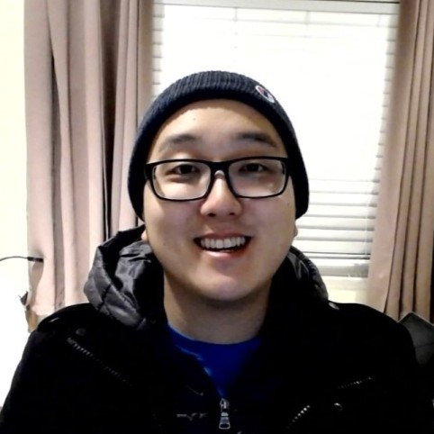
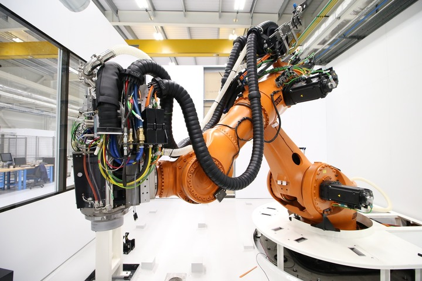
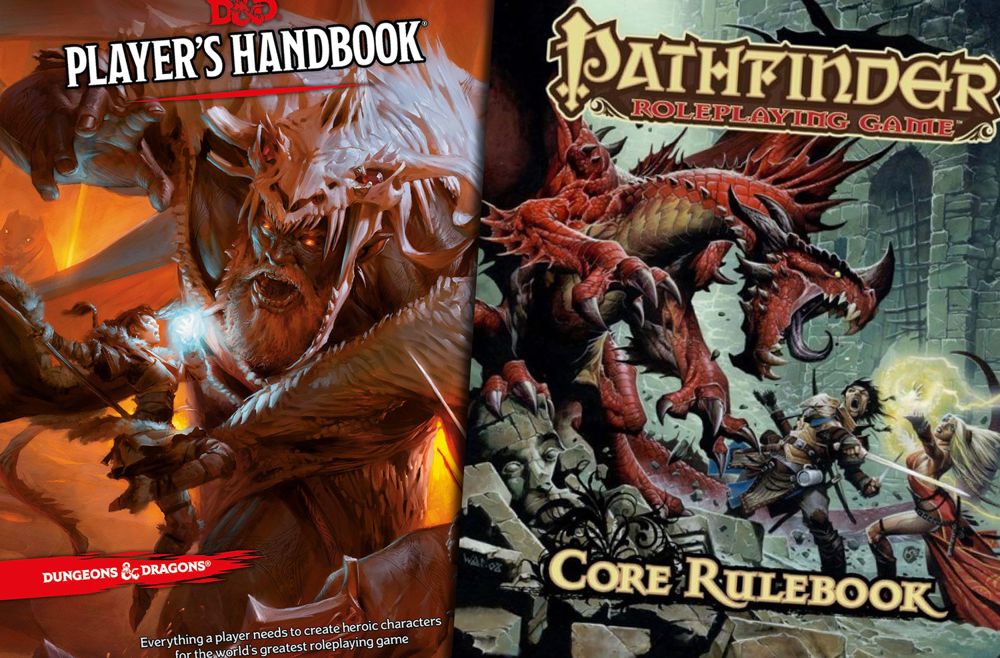

Studious Software and STEM engineer by day. Avid game designist
by night. I attended UC San Diego where I graduated with a
bachelors of science in Structural Engineering. After working
peripherally with amazing software and scripting in the
aerospace industry, I felt the drive to go off the rails and
dive into a new field, filled with new ideas and possibilities.
So I enrolled into an immersive development bootcamp with
Actualize. I’ve fallen in love with coding, and have been
immersing myself in the magical world of software development
since. My goal is to develop software that will help pave a way
for the future and provide productivity and fulfillment to
everybody. I am a game designer, a dungeon master, a web
developer. I am a dreamer!


-
Robot Arm Drill Prototype
Development of prototype automatic drill machine for production
of plane assets, involving organization, programming, testing,
and design. Utilized CAD Software Languages.
-
Dynamic Kanban Scheduling Applications
Generated applications and script automation for laboratory
project planning and item acquisition. Involved using Visual
Basic to create a User Interface and material procurment
scheduling algorithms to run concurrent Kanban stock scheduling.
Also involved VBA automation of MS Project Calendar creation.
-
Dungeon Master Leveling
Website for Dungeon Masters, far and wide, to help hone their
craft in tabletop RPG and the elusive art of game management.
Integrates fundamentals and best practices in full-stack web
development areas of project architecture, backend, and
frontend, with Rails and Vue.js as platforms.
Languages and Libraries: JavaScript, Ruby, SQL, Visual Basic for
Applications Platforms and Frameworks: Rails, Vue.js, Node.js
Database Tools: PostgreSQL Other Tech Skills: GitHub, Heroku, JSON,
Encryption, Insomnia, Visual Studio
-
5,120 Game Theory
-
8,192 Magna
-
2,048 Tempus
-
4,096 Aliquam
-
1,024 Nullam

Ever since I was young, I’ve enjoyed the art of creating games. I’d
draw up my own tcg cards, create skeeball rigs from paper and tape,
and cut up cardboard for elaborate board games. This aspect of me
has not changed into my adulthood. When I find the time, I enjoy
developing game concepts and researching game design as a whole. Art
at their best, and powerful glimpses into human experience when
examined, playing games allow us as people to connect to ourselves
and others on a whole new level. They allow us the opportunity to
delve into the deep nooks of our mind’s operating system, and I
enjoy every opportunity to understand this process more and more.
Not to mention I love playing games! I dungeon master for my friends
whenever I get the chance, weaving stories, forging battles,
articulating strange new worlds and cultures!